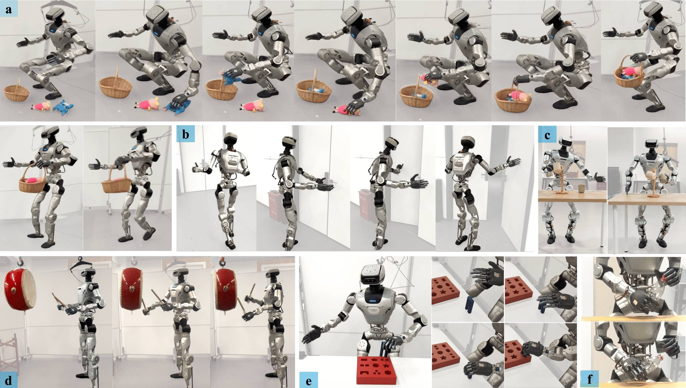
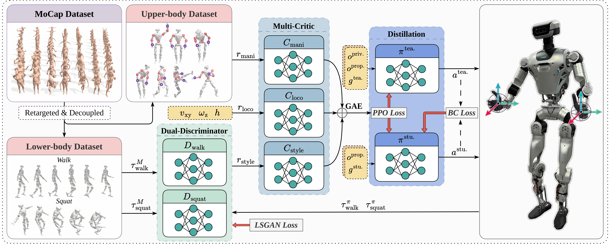
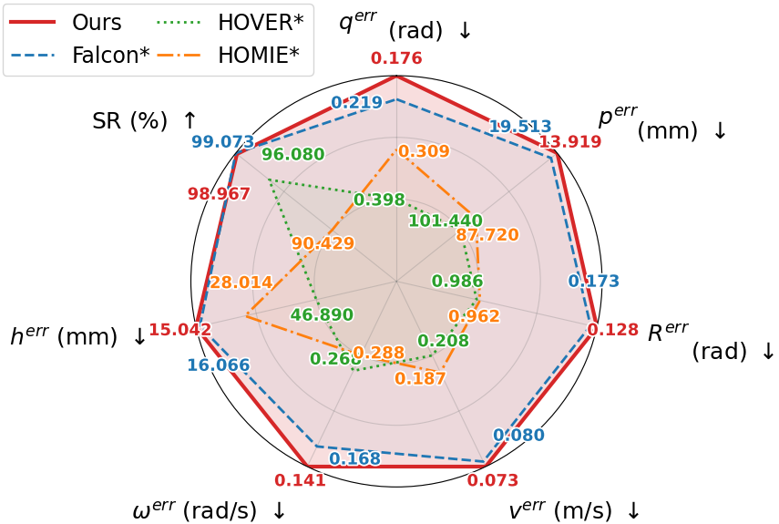
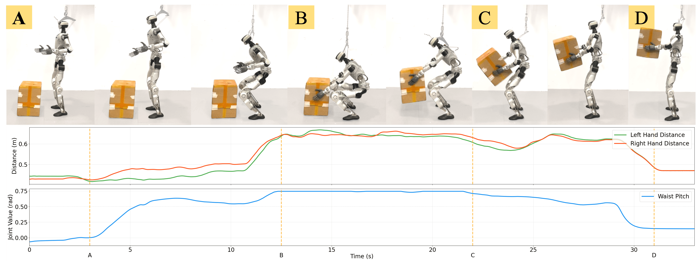

CWI enables diverse whole-body loco-manipulation skills with stable locomotion and dexterous upper-body control.
Abstract
Achieving everyday tasks with humanoid robots requires coordinating stable locomotion with versatile manipulation. However, existing whole-body controllers still face significant challenges. Methods trained solely via command sampling, without motion-capture (MoCap) data, often struggle with sparse rewards and require carefully tuned curricula to converge. This is especially problematic for upper-body control, where the resulting motions deviate from human-like statistics and degrade whole-body coordination. Conversely, approaches that imitate full-body MoCap data suffer from dataset imbalance, as many locomotion trajectories are overly aggressive for stable-locomotion scenarios, necessitating extensive data filtering and augmentation.
To address this, we present Composite Whole-Body Imitation (CWI), a framework that decouples the use of MoCap data for upper-body manipulation and lower-body locomotion. This decoupling allows us to exploit the full MoCap dataset of diverse manipulation references, while stable, command-conditioned lower-body locomotion is guided by dual discriminators trained on curated expert-quality walking and squatting clips via an Adversarial Motion Prior (AMP). A multi-critic architecture reduces conflicts among locomotion, manipulation, and motion-style objectives, and a teacher-student distillation stage yields a whole-body policy conditioned only on bimanual hand poses and velocity/height commands.
We evaluate CWI through simulation experiments and real-world deployment on a full-size LimX Oli humanoid. The results show competitive loco-manipulation performance, robust whole-body coordination, and practical teleoperation without full-body motion-capture equipment.
Videos
The project studies whole-body coordination across long-horizon loco-manipulation, precise interaction, and stable command-conditioned movement.
Method
CWI separates the roles of motion data instead of forcing one full-body MoCap distribution to explain both dexterous manipulation and stable locomotion. The system learns expressive upper-body tracking from full AMASS references, while compact expert walking and squatting clips provide lower-body style priors through AMP.
Full upper-body MoCap trajectories are retained for manipulation, while curated lower-body clips guide command-conditioned walking and squatting.
Locomotion rewards, upper-body tracking rewards, and AMP style rewards are optimized with a multi-critic actor to reduce conflicts among objectives.
A teacher-student stage distills the policy into a real-robot controller driven by bimanual hand poses plus velocity and base-height commands.

Evaluation
CWI is evaluated on the 31-DoF LimX Oli full-size humanoid in IsaacLab and on hardware. The study compares representative humanoid whole-body controllers, ablates the multi-critic, distillation, and AMP components, and validates practical VR-based teleoperation.
CWI achieves the strongest overall trade-off across success rate, keybody tracking, velocity tracking, yaw-rate tracking, and base-height tracking metrics.

Removing the multi-critic, distillation, or AMP prior degrades either manipulation tracking, locomotion stability, or motion naturalness, highlighting the role of each component.
| Method | vxyerr (m/s) |
ωzerr (rad/s) |
herr (mm) |
peeerr (mm) |
Reeerr (rad) |
dDTW (rad) |
|---|---|---|---|---|---|---|
| Baseline | 0.100 | 0.1825 | 19.65 | 42.91 | 0.1708 | 0.452 |
| w/o MC | 0.099 | 0.199 | 20.64 | 55.49 | 0.2308 | 0.520 |
| w/o Distill | 0.099 | 0.147 | 19.43 | 173.2 | 0.6723 | 0.444 |
| w/o AMP | 0.125 | 0.242 | 22.52 | 42.92 | 0.1696 | 1.413 |
In real-world box lifting, the policy coordinates hand reach and torso posture without an explicit torso command, preserving upper-body dexterity while maintaining stable locomotion.

@article{ge2025cwi,
author = {Ge, Wenqi and Guo, Junde and Fu, Zhen and Yang, Shunpeng and Chen, Jiayu and Chen, Hua},
title = {CWI: Composite Humanoid Whole-Body Imitation System for Loco-manipulation},
journal = {IEEE Robotics and Automation Letters},
year = {2025}
}